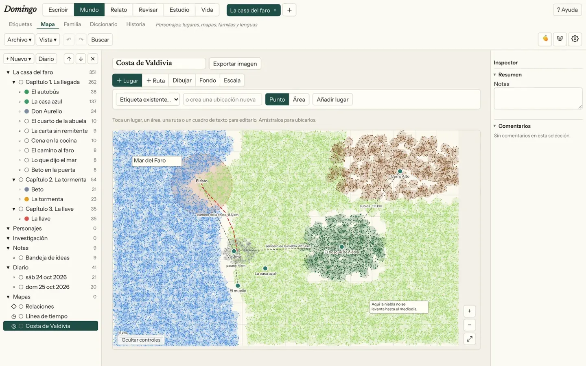
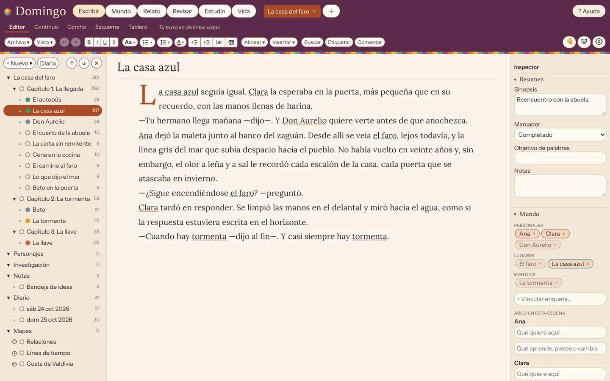
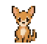
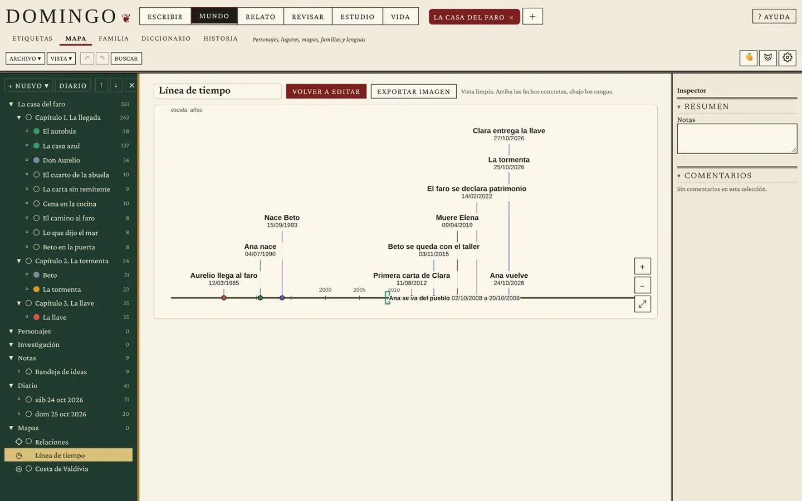
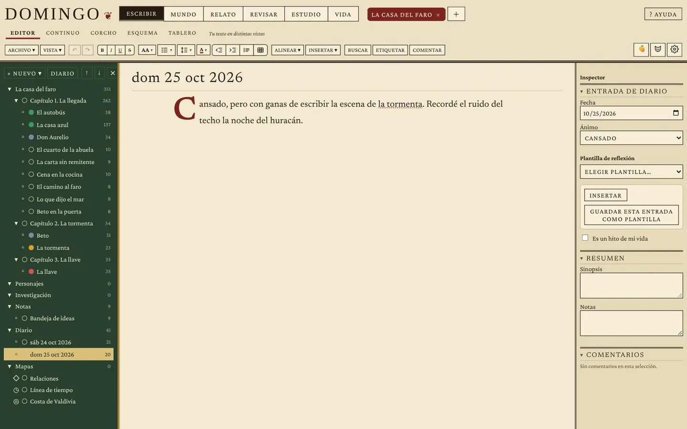

Escribe como si fuera domingo.
Un estudio de escritura en español para terminar lo que empezaste. Tu novela, tu tesis, tu guion o tu diario, en un solo archivo que es tuyo.
macOS y Windows · 14 días gratis con todo · después, pago únicomacOS y Windows · sin conexión · pago único
¿Sin instalar nada? Domingo Lite es gratis en tu navegador.

Tuyo
Cada proyecto es un archivo .mingo en tu equipo, en un formato abierto y documentado.
Privado
Sin cuenta y sin nube. Tu texto no sale de tu computadora y el diario se puede cifrar.
En español
Corrección, estilo y plantillas pensadas para nuestro idioma, con sus tildes y su puntuación.
Sin prisa
Metas amables que se apagan si quieres. Escribes a tu ritmo, no al de la app.

Llega Domingo 3.03.1
Talleres de escritura con su propio botón, un Cuaderno al estilo bullet journal, dieciséis páginas para el diario, convertir manuscritos de Word, PDF o Scrivener, publicar en tu blog y un Estudio más completo para tu tesis.
Todo lo que rodea al texto, en el mismo lugar
El manuscrito, los personajes, los mapas, la revisión, las fuentes y tu diario viven juntos y se conocen entre sí. Cada pestaña muestra una parte.

Todo tu oficio en uno
Escribir, Mundo, Relato, Revisar, Estudio, Vida y Publicar, con talleres, mapas y tu Cuaderno.

Diez estilos, tres tonos
De Clásico a Bauhaus, cada uno en claro, sepia y oscuro. Treinta formas de ver tu estudio.

Misi, Domingo y Yoshi
Un gato de píxeles que come, juega y duerme junto a tu texto. Y otros que aparecen si escribes mucho.



Talleres para aprender a escribir
Seis talleres cortos por formato, poema, microrrelato, carta, crónica personal, columna y diario, y tu primer cuento en cinco sesiones. Un gato maestro con birrete te explica las técnicas y te propone escribir sobre tu propia vida.
Cada taller crea un manuscrito tuyo que se conserva y recuerda dónde te quedaste.


Quería un lugar para escribir con la calma de un domingo: sin prisa, sin ruido y con alguien que te acompañe. Por eso la app lleva el nombre de mi perro.